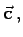
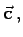
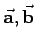
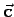
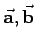
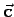
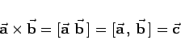
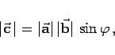

Inhalt Index DeskTop Bronstein

 Geometrie Vektoralgebra und analytische Geometrie Vektoralgebra Skalarprodukt und Vektorprodukt
Geometrie Vektoralgebra und analytische Geometrie Vektoralgebra Skalarprodukt und Vektorprodukt


Die Vektorielle Multiplikation ist eine Operation, die zum Vektorprodukt zweier Vektoren  und
und  auch Kreuzprodukt genannt, führt. Dieses ergibt einen Vektor  der auf
auch Kreuzprodukt genannt, führt. Dieses ergibt einen Vektor  der auf  und
und  senkrecht steht, derart, daß die Vektoren  und  ein Rechtssystem bilden.
senkrecht steht, derart, daß die Vektoren  und  ein Rechtssystem bilden.
Vorausgesetzt, die Anfangspunkte der drei Vektoren sind in einem Punkt zusammengeführt, dann ist das der Fall, wenn ein Beobachter, der auf die durch  und
und  aufgespannte Ebene und gleichzeitig in die Richtung von blickt, den Vektor
aufgespannte Ebene und gleichzeitig in die Richtung von blickt, den Vektor  durch die kürzeste Drehung im Uhrzeigersinn nach
durch die kürzeste Drehung im Uhrzeigersinn nach  überführen kann.
überführen kann.
Rechte-Hand-Regel: Die Vektoren und haben dann die gleiche Orientierung, wie Daumen, Zeigefinger und Mittelfinger der rechten Hand (Rechte-Hand-Regel).
Quantitativ liefert das Vektorprodukt
|  | (3.272a) |
einen Vektor der Länge
|  | (3.272b) |
wobei  der zwischen
der zwischen  und
und  eingeschlossene Winkel ist. Zahlenmäßig ist die Länge von gleich dem Flächeninhalt des von
eingeschlossene Winkel ist. Zahlenmäßig ist die Länge von gleich dem Flächeninhalt des von  und
und  aufgespannten Parallelogramms.
aufgespannten Parallelogramms.